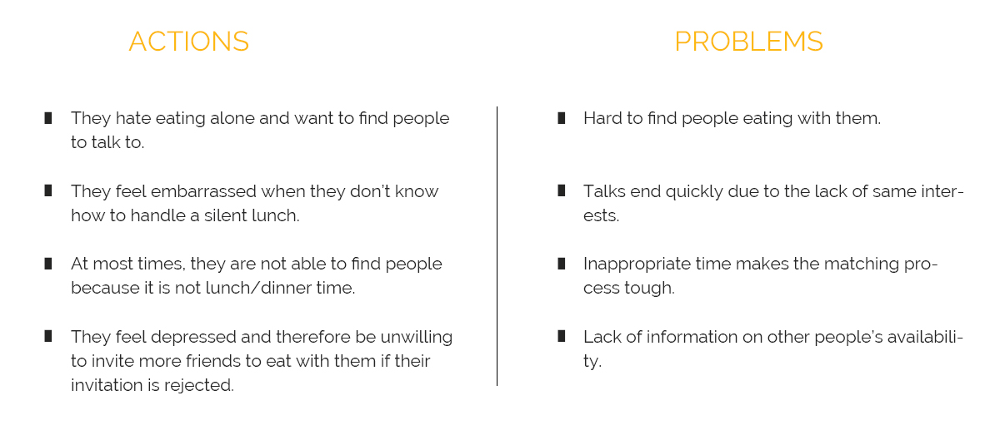
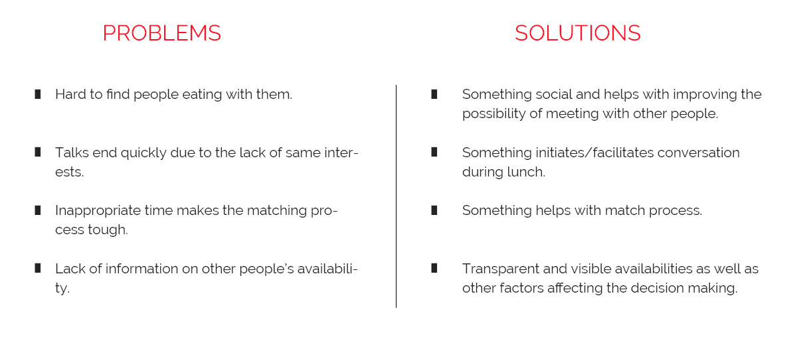
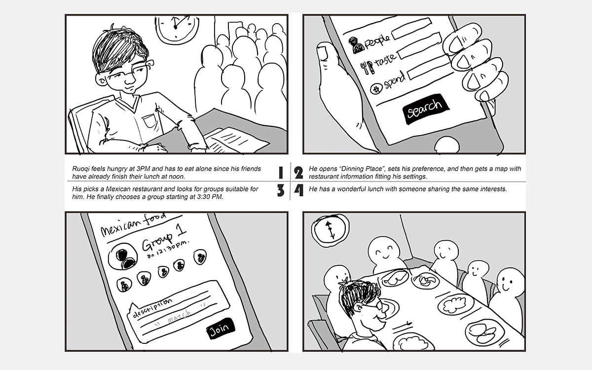
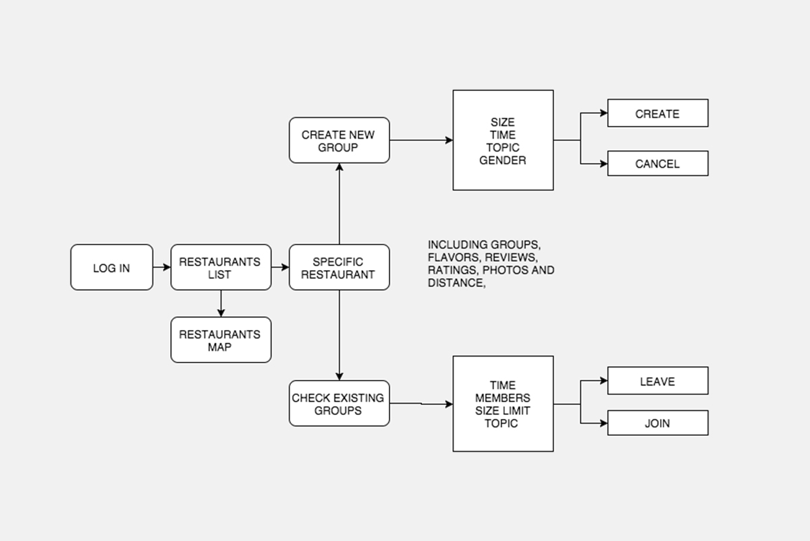
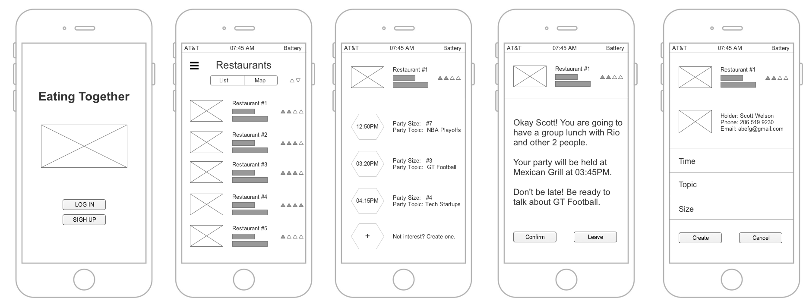
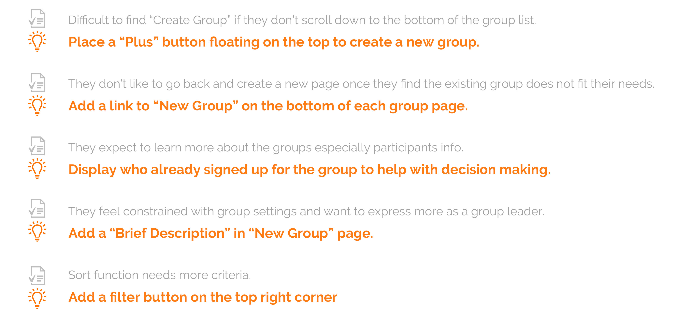

Eating Together
App Design | Interaction Design
The idea of this mobile app originates from the frequently complaints of my introvert friends who hate eating on their own. Sometimes they just go to a restaurant alone without even knowing what they are going to order. They might see others talking about a topic which interests them and want to join, however, they usually feel ashamed to walk up and say “Hey, I am Josh, can I join in your talk?” Eating Together, at this point, help them with overcoming their sense of shame, introducing them into a group of strangers while dining in a restaurant, or even leading a group talk while eating. Through Eating Together, I would like to improve their dining experience through being able to talk with other people who share the same interests with them.
User Research and Problem shooting
To start with, I designed an online survey and collected data from 127 participants by convenience sampling. I then conducted interviews by convenience sampling with 7 introvert people who want to improve their dining experience as opposed to eating alone. During the interview, I focused on understanding the difficulties they encounter when they are trying to decide “How to eat?” My goal in research is to find out as many thoughts/concerns they considered as requirements/goals when making decisions as possible.
Through research, I would like to find out what our users pain points are and understand the problems behind each of them. Based on the interviews and the feedbacks we got, I finalized four actions with four problems behind them.

Understand the Problem
In responding to the user needs, I prepared four possible solutions to address each of them. First, I decided to build upon a restaurant-based app like Yelp so that provides more options for users to start with based on the reviews and ratings for each restaurant. Then, I would like to add more functions on to it so they address other user needs. In terms of the problem of silent lunch/dinner, my solution is “looking at people who share the same interest with you, but not who are close to you”, which means, I would encourage users to eat with people of the same interests through the app so that guarantees the lunch/dinner will never be silent due to the lack of topics. As for the inappropriate timing, the app should be serving as a tool that bridges physical distance and finds people on a larger scale. To address the depression and embarrassment caused by non transparency of others’ availability, I would encourage users to set up a place where others could check your availabilities and willingness.
From Solution to Design
After consolidating all the problems, I started thinking about how to merge these solutions together. I decided to adopt some key features from Yelp at first (e.g. restaurants reviews, ratings, location-based recommendations) so that enables users to look through what their options are. After that, I merged a topic group function into the app where users could look for particular group fitting their needs. (e.g. dining time, topic, participants, etc.) The topic group function is, when the user picks a restaurant where he decides to have lunch, it comes to the groups page in this restaurant, where the user could either choose to join in an existing group or create a new group and wait for people joining in, based on his/her interests or availability.
Scenario
I created a storyboard to show how Scott uses Eating Together to choose whom he is going to dine with.

Task Flow
I draw the task flow of Eating Together to figure out the struction of it.

Wireframing
In order to achieve the three basic goals mentioned before, I drew several UIs to illustrate my thoughts as well as for further usability test. I only sketched main walkthroughs and focused on the functionalities of it.

Critique and Iteration
I brought my sketches to class and invited my peers to critique it. I found five key responses which need to be improved.

Hign Fidelity UI Mockups
I created seven UI for Eating Together including a) group list b) filter c) creating new page d) profile and etc.